Items
| 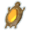 | 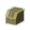 | 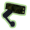 | |||||||||||
| 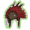 | |||||||||||||
| 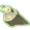 | 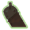 | 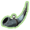 | 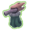 | 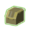 | 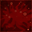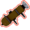 | ||||||||
| 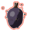 | 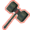 | ||||||||||||
| 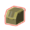 | 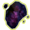 | 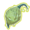 | 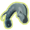 | ||||||||||
| 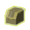 | 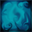 | 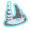 | 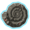 | 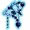 | 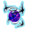 | ||||||||
| 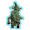 | 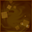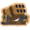 | 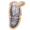 | |||||||||||
| 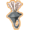 | 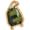 | 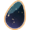 | 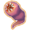 | 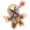 | |||||||||
Items are special collectibles that spawn while playing the game.
Players can pick items up to gain a special effect based upon what type of item it is. Each item's icon also has a colored border to indicate its rarity:
Some items need to be unlocked by completing a Challenge to appear in game. Pick up an item to unlock logbook entry.
There are currently 97 items and 30 equipment in the game. You can find a list of all these items below:
Contents
Passive Items[edit | edit source]
A passive item visually appears in the top bar in-game and provides a certain benefit to a player (or in some cases, a drawback), specific to that item, as long as it is in a player's inventory. If it is removed from their inventory (e.g. by using a 3D printer), they no longer are affected by that item's effects.
There is no limit to how many different types of passive item, or how many of a passive item a player can hold at any one time.[1] Multiples of a specific item stack the item's effects in a particular manner, instead of each affecting the player individually. See: Item Stacking
Common[edit | edit source]
Common items are probably the first items a player will obtain in game. They can be extremely powerful in large quantities, and thus should not be underestimated. There are 25 Common items.
| Item | Description | Stack Type |
|---|---|---|
| Item | Description | Stack Type |
| Armor-Piercing Rounds | Deal an additional 20% damage (+20% per stack) to bosses. | Linear |
| Backup Magazine | Add +1 (+1 per stack) charge of your Secondary skill. | Linear |
| Bundle of Fireworks | Activating an interactable launches 8 (+4 per stack) fireworks that deal 300% base damage. | Linear |
| Bustling Fungus | After standing still for 2 seconds, create a zone that heals for 4.5% (+2.25% per stack) of your health every second to all allies within 3m (+1.5m per stack). | Linear |
| Cautious Slug | Increases base health regeneration by +3 hp/s (+3 hp/s per stack) while outside of combat. | Linear |
| Crowbar | Deal 150% (+50% per stack) damage to enemies above 90% health. | Linear |
| Energy Drink | Sprint speed is improved by 30% (+20% per stack). | Linear |
| Focus Crystal | Increase damage to enemies within 13m by 15% (+15% per stack). | Linear |
| Fresh Meat | Increases base health regeneration by +2 hp/s for 3s (+3s per stack) after killing an enemy. | Linear |
| Gasoline | Killing an enemy ignites all enemies within 12m (+4m per stack). Enemies burn for 150% (+75% per stack) base damage. | Linear |
| Item Scrap, White | Does nothing. Prioritized when used with 3D Printers. | - |
| Lens-Maker's Glasses | Your attacks have a 10% (+10% per stack) chance to 'Critically Strike', dealing double damage. | Linear |
| Medkit | 2 seconds after getting hurt, heal for 20 plus an additional 5% (+5% per stack) of maximum health. | Linear |
| Monster Tooth | Killing an enemy spawns a healing orb that heals for 8 plus an additional 2% (+2% per stack) of maximum health. | Linear |
| Paul's Goat Hoof | Increases movement speed by 14% (+14% per stack). | Linear |
| Personal Shield Generator | Gain a shield equal to 8% (+8% per stack) of your maximum health. Recharges outside of danger. | Linear |
| Repulsion Armor Plate | Reduce all incoming damage by 5 (+5 per stack). Cannot be reduced below 1. | Linear |
| Rusted Key | A hidden cache containing an item will appear in a random location on each stage. (Increases rarity of the item per stack). | Special |
| Soldier's Syringe | Increases attack speed by 15% (+15% per stack). | Linear |
| Sticky Bomb | 5% (+5% per stack) chance on hit to attach a bomb to an enemy, detonating for 180% TOTAL damage. | Linear |
| Stun Grenade | 5% (+5% on stack) chance on hit to stun enemies for 2 seconds. | Hyperbolic |
| Topaz Brooch | Gain a temporary barrier on kill for 15 health (+15 per stack). | Linear |
| Tougher Times | 15% (+15% per stack) chance to block incoming damage. Unaffected by luck. | Hyperbolic |
| Tri-Tip Dagger | 15% (+15% per stack) chance to bleed an enemy for 240% base damage. | Linear |
| Warbanner | On level up or starting the Teleporter event, drop a banner that strengthens all allies within 16m (+8m per stack). Raise attack and movement speed by 30%. | Linear |
Uncommon[edit | edit source]
Uncommon items, as the name suggests, are rarer and possibly more powerful. There are 26 Uncommon Items.
| Item | Description | Stack Type |
|---|---|---|
| Item | Description | Stack Type |
| AtG Missile Mk. 1 | 10% chance to fire a missile that deals 300% (+300% per stack) TOTAL damage. | Linear |
| Bandolier | 18% (+10% per stack) chance on kill to drop an ammo pack that resets all skill cooldowns. | Special |
| Berzerker's Pauldron | Killing 3 enemies within 1 second sends you into a frenzy for 6s (+4s per stack). Increases movement speed by 50% and attack speed by 100%. | Linear |
| Chronobauble | Slow enemies on hit for -60% movement speed for 2s (+2s per stack). | Linear |
| Death Mark | Enemies with 4 or more debuffs are marked for death, increasing damage taken by 50% from all sources for 7 (+7 per stack) seconds. | Linear |
| Fuel Cell | Hold an additional equipment charge (+1 per stack). Reduce equipment cooldown by 15% (+15% per stack). | Linear Exponential |
| Ghor's Tome | 4% (+4% on stack) chance on kill to drop a treasure worth $25. Scales over time. | Linear |
| Harvester's Scythe | Gain 5% critical chance. Critical strikes heal for 8 (+4 per stack) health. | Linear None |
| Hopoo Feather | Gain +1 (+1 per stack) maximum jump count. | Linear |
| Infusion | Killing an enemy increases your health permanently by 1 (+1 per stack), up to a maximum of 100 (+100 per stack) health. | Linear |
| Item Scrap, Green | Does nothing. Prioritized when used with 3D Printers. | - |
| Kjaro's Band | Hits that deal more than 400% damage also blasts enemies with a runic flame tornado, dealing 300% (+300% per stack) TOTAL damage over time. Recharges every 10 seconds. | Linear |
| Leeching Seed | Dealing damage heals you for 1 (+1 per stack) health. | Linear |
| Lepton Daisy | Release a healing nova during the Teleporter event, healing all nearby allies for 50% of their maximum health. Occurs 1 (+1 per stack) times. | Linear |
| Old Guillotine | Instantly kill Elite monsters below 13% (+13% per stack) health. | Hyperbolic |
| Old War Stealthkit | Chance on taking damage to gain 40% movement speed and invisibility for 3s (+1.5s per stack). Chance increases the more damage you take. | Linear |
| Predatory Instincts | Gain 5% critical chance. Critical strikes increase attack speed by 12%. Maximum cap of 36% (+24% per stack) attack speed. | Linear None |
| Razorwire | Getting hit causes you to explode in a burst of razors, dealing 160% damage. Hits up to 5 (+2 per stack) targets in a 25m (+10m per stack) radius | Linear |
| Red Whip | Leaving combat boosts your movement speed by 30% (+30% per stack). | Linear |
| Rose Buckler | Increase armor by 30 (+30 per stack) while sprinting. | Linear |
| Runald's Band | Hits that deal more than 400% damage also blasts enemies with a runic ice blast, slowing them by 80% for 3s (+3s per stack) and dealing 250% (+250% per stack) TOTAL damage. Recharges every 10 seconds. | Linear |
| Squid Polyp | Activating an interactable summons a Squid Turret that attacks nearby enemies at 100% (+100% per stack) attack speed. Lasts 30 seconds. | Linear |
| Ukulele | 25% chance to fire chain lightning for 80% TOTAL damage on up to 3 (+2 per stack) targets within 20m (+2m per stack). | Linear |
| War Horn | Activating your Equipment gives you +70% attack speed for 8s (+4s per stack). | Linear |
| Wax Quail | Jumping while sprinting boosts you forward by 10m (+10m per stack). | Linear |
| Will-o'-the-wisp | On killing an enemy, spawn a lava pillar in a 12m (+2.4m per stack) radius for 350% (+280% per stack) base damage. | Linear |
Legendary[edit | edit source]
Legendary items are extra rare in game, with approximately 1% chance to drop from a Small Chest. There are more efficient ways to obtain Legendary items, however. There are 20 Legendary Items.
| Item | Description | Stack Type |
|---|---|---|
| Item | Description | Stack Type |
| 57 Leaf Clover | All random effects are rolled +1 (+1 per stack) times for a favorable outcome. | Linear |
| Aegis | Healing past full grants you a temporary barrier for 50% (+50% per stack) of the amount you healed. | Linear |
| Alien Head | Reduce skill cooldowns by 25% (+25% per stack). | Exponential |
| Brainstalks | Upon killing an elite monster, enter a frenzy for 4s (+4s per stack) where skills have 0.5s cooldowns. | Linear |
| Brilliant Behemoth | All your attacks explode in a 4m (+1.5m per stack) radius for a bonus 60% TOTAL damage to nearby enemies. | Linear |
| Ceremonial Dagger | Killing an enemy fires out 3 homing daggers that deal 150% (+150% per stack) base damage. | Linear |
| Defensive Microbots | Shoot down 1 (+1 per stack) projectiles within 20m every 0.5 seconds. Recharge rate scales with attack speed. | Linear |
| Dio's Best Friend | Upon death, this item will be consumed and you will return to life with 3 seconds of invulnerability. | Linear |
| Frost Relic | Killing an enemy surrounds you with an ice storm that deals 600% damage per second. The storm grows with every kill, increasing its radius by 1m. Stacks up to 6m (+6m per stack). | Linear |
| H3AD-5T v2 | Increase jump height. Creates a 5m-100m radius kinetic explosion on hitting the ground, dealing 1000%-10000% base damage that scales up with speed. Recharges in 10 (-50% per stack) seconds. | Exponential |
| Happiest Mask | Killing enemies has a 7% chance to spawn a ghost of the killed enemy with 1500% damage. Lasts 30s (+30s per stack). | Linear |
| Hardlight Afterburner | Add +2 (+2 per stack) charges of your Utility skill. Reduces Utility skill cooldown by 33%. | Linear |
| Interstellar Desk Plant | On kill, plant a healing fruit seed that grows into a plant after 5 seconds.
The plant heals for 10% of maximum health every second to all allies within 5m (+5.0m per stack). Lasts 10 seconds. |
Linear |
| Item Scrap, Red | Does nothing. Prioritized when used with 3D Printers. | - |
| N'kuhana's Opinion | Store 100% (+100% per stack) of healing as Soul Energy. After your Soul Energy reaches 10% of your maximum health, fire a skull that deals 250% of your Soul Energy as damage. | Linear |
| Rejuvenation Rack | Heal +100% (+100% per stack) more. | Linear |
| Resonance Disc | Killing enemies charges the Resonance Disc. The disc launches itself toward a target for 300% base damage (+300% per stack), piercing all enemies it doesn't kill, and then explodes for 1000% base damage (+1000% per stack). Returns to the user, striking all enemies along the way for 300% base damage (+300% per stack). | Linear |
| Sentient Meat Hook | 20% (+20% per stack) chance on hit to fire homing hooks at up to 10 (+5 per stack) enemies for 100% TOTAL damage. | Hyperbolic Linear |
| Shattering Justice | After hitting an enemy 5 times, reduce their armor by 60 for 8 (+8 per stack) seconds. | Linear |
| Soulbound Catalyst | Kills reduce equipment cooldown by 4s (+2s per stack). | Linear |
| Unstable Tesla Coil | Fire out lightning that hits 3 (+2 per stack) enemies for 200% base damage every 0.5s. The Tesla Coil switches off every 10 seconds. | Linear |
| Wake of Vultures | Gain the power of any killed elite monster for 8s (+5s per stack). | Linear |
Boss[edit | edit source]
Boss items (also known as planet items) are uncommon items that may drop as rewards for defeating teleporter bosses, they cannot be obtained from chests. Each boss item may only drop if its respective boss monster spawned as the teleporter boss (e.g. Titanic Knurls may only drop if the teleporter boss was a Stone Titan).
| Item | Description | Boss / Acquired From | Stack Type |
|---|---|---|---|
| Item | Description | Boss / Acquired From | Stack Type |
| Artifact Key | A stone shard with immense power. | Bulwark's Ambry | - |
| Genesis Loop | Falling below 25% health causes you to explode, dealing 6000% base damage. Recharges every 30 / (2 +1 per stack) seconds . | Wandering Vagrant | Linear |
| Halcyon Seed | Summon Aurelionite during the teleporter event. It has 100% (+50% per stack) damage and 100% (+100% per stack) health. | Aurelionite | Linear |
| Irradiant Pearl | Increases ALL stats by 10% (+10% per stack). | Cleansing Pool | Linear |
| Item Scrap, Yellow | Does nothing. Prioritized when used with 3D Printers. | - | - |
| Little Disciple | Fire a tracking wisp for 300% (+300% per stack) damage. Fires every 1.6 seconds while sprinting. Fire rate increases with movement speed. | Grovetender | Linear |
| Mired Urn | While in combat, the nearest 1 (+1 per stack) characters to you within 13m will be 'tethered' to you, dealing 100% damage per second, applying tar, and healing you for 100% of the damage dealt. | Clay Dunestrider | Linear |
| Molten Perforator | 10% chance on hit to call forth 3 magma balls from an enemy, dealing 300% (+300% per stack) damage each. | Magma Worm | Linear |
| Pearl | Increases maximum health by 10% (+10% per stack). | Cleansing Pool | Linear |
| Queen's Gland | Every 30 seconds, summon a Beetle Guard with bonus 300% damage and 100% health. Can have up to 1 (+1 per stack) Guards at a time. | Beetle Queen | Linear |
| Shatterspleen | Gain 5% critical chance. Critical Strikes bleed enemies for 240% base damage. Bleeding enemies explode on death for 400% (+400% per stack) damage, plus an additional 15% (+15% per stack) of their maximum health. | Imp Overlord | Linear None |
| Titanic Knurl | Increase maximum health by 40 (+40 per stack) and base health regeneration by +1.6 hp/s (+1.6 hp/s per stack). | Stone Titan | Linear |
Lunar[edit | edit source]
Lunar items are a new tier of items introduced in Risk of Rain 2. They are characterized by their powerful abilities at the cost of having considerable drawbacks. Chests and other common loot interactibles will not drop Lunar items; as such the only ways to obtain them are from Lunar Pods found rarely throughout environments or from the Bazaar Between Time. Both methods require spending Lunar Coins, as opposed to Gold.
| Item | Description | Stack Type |
|---|---|---|
| Item | Description | Stack Type |
| Beads of Fealty | Seems to do nothing... but... | - |
| Brittle Crown | 30% chance on hit to gain 2 (+2 per stack) gold. Scales over time.
Lose gold on taking damage equal to 100% (+100% per stack) of the maximum health percentage you lost. |
Linear |
| Corpsebloom | Heal +100% (+100% per stack) more. All healing is applied over time. Can heal for a maximum of 10% (reduced by 50% per stack) of your health per second. | Linear Exponential |
| Defiant Gouge | Using a Shrine summons enemies (stronger per stack) nearby. Scales over time. | Linear |
| Focused Convergence | Teleporters charge 30% (+30% per stack) faster, but the size of the Teleporter zone is 50% (-50% per stack) smaller. | Linear Hyperbolic |
| Gesture of the Drowned | Reduce Equipment cooldown by 50% (+15% per stack). Forces your Equipment to activate whenever it is off cooldown. | Exponential |
| Mercurial Rachis | Creates a Ward of Power in a random location nearby that buffs both enemies and allies within 16m (+50% per stack), causing them to deal +50% damage. | Linear |
| Purity | All skill cooldowns are reduced by 2 (+1 per stack) seconds. All random effects are rolled +1 (+1 per stack) times for an unfavorable outcome. | Linear |
| Shaped Glass | Increase base damage by 100% (+100% per stack). Reduce maximum health by 50% (+50% per stack). | Exponential |
| Strides of Heresy | Replace your Utility Skill with Shadowfade.
Fade away, becoming intangible and gaining +30% movement speed. Heal for 18.2% (+18.2% per stack) of your maximum health. Lasts 3 (+3 per stack) seconds. |
Linear |
| Transcendence | Convert all but 1 health into regenerating shields. Gain 50% (+25% per stack) maximum health. | Linear |
| Visions of Heresy | Replace your Primary Skill with Hungering Gaze.
Fire a flurry of tracking shards that detonate after a delay, dealing 120% base damage. Hold up to 12 charges (+12 per stack) that reload after 2 seconds (+2 per stack). |
Linear |
Active Items[edit | edit source]
An active item ("Equipment") often provides no benefit unless it is used by the player (as they would one of their abilities), which provides a powerful effect but incurs a comparatively lengthy cool-down period during which it (or other active items) can't be used by that player again. A player can normally hold only one active item at any time; if they try to pick up an active item while they are already holding one, they will swap it for the new one instead. There are 21 standard Active Items, 4 Lunar Active items, and 5 Elite "Active" items.
Equipment[edit | edit source]
| Item | Description | Cooldown |
|---|---|---|
| Item | Description | Cooldown |
| Blast Shower | Cleanse all negative effects. Includes debuffs, damage over time, and nearby projectiles. | 20s |
| Disposable Missile Launcher | Fire a swarm of 12 missiles that deal 12x300% damage. | 45s |
| Eccentric Vase | Create a quantum tunnel of up to 1000m in length. Lasts 30 seconds. | 45s |
| Foreign Fruit | Instantly heal for 50% of your maximum health. | 45s |
| Forgive Me Please | Throw a cursed doll out that triggers any On-Kill effects you have every 1 second for 8 seconds. | 45s |
| Fuel Array | Looks like it could power something. EXTREMELY unstable... | - |
| Gnarled Woodsprite | Gain a Woodsprite follower that heals for 1.5% of your maximum health/second. Can be sent to an ally to heal them for 10% of their maximum health. | 15s |
| Gorag's Opus | All allies enter a frenzy for 7 seconds. Increases movement speed by 50% and attack speed by 100%. | 45s |
| Jade Elephant | Gain 500 armor for 5 seconds. | 45s |
| Milky Chrysalis | Sprout wings and fly for 15 seconds. Gain +20% movement speed for the duration. | 60s |
| Ocular HUD | Gain +100% Critical Strike Chance for 8 seconds. | 60s |
| Preon Accumulator | Fires preon tendrils, zapping enemies within 35m for up to 600% damage/second. On contact, detonate in an enormous 20m explosion for 4000% damage. | 140s |
| Primordial Cube | Fire a black hole that draws enemies within 30m into its center. Lasts 10 seconds | 60s |
| Radar Scanner | Reveal all interactables within 500m for 10 seconds. | 45s |
| Recycler | Transform an Item or Equipment into a different one. Can only be converted into the same tier one time. | 45s |
| Royal Capacitor | Call down a lightning strike on a targeted monster, dealing 3000% damage and stunning nearby monsters. | 20s |
| Sawmerang | Throw three large saw blades that slice through enemies for 3x400% damage. Also deals an additional 3x100% damage per second while bleeding enemies. Can strike enemies again on the way back. | 45s |
| Super Massive Leech | Heal for 20% of the damage you deal. Lasts 8 seconds. | 60s |
| The Back-up | Call 4 Strike Drones to fight for you. Lasts 25 seconds. | 100s |
| The Crowdfunder | Fires a continuous barrage that deals 100% damage per bullet. Costs $1 per bullet. Cost increases over time. | - |
| Volcanic Egg | Turn into a draconic fireball for 5 seconds. Deal 500% damage on impact. Detonates at the end for 800% damage. | 30s |
Lunar Equipment[edit | edit source]
Similar to passive Lunar items, Lunar Equipment can only be obtained from Lunar Pods or the Bazaar Between Time in exchange for Lunar Coins. There are 4 Lunar Equipment.
| Item | Description | Cooldown |
|---|---|---|
| Item | Description | Cooldown |
| Effigy of Grief | ALL characters within are slowed by 50% and have their armor reduced by 20. Can place up to 5. | 45s |
| Glowing Meteorite | Rain meteors from the sky, damaging ALL characters for 600% damage per blast. Lasts 20 seconds. | 140s |
| Helfire Tincture | Ignite ALL characters within 15m for 12s. Deal 5% of your maximum health/second as burning to yourself. The burn is 0.5x stronger on allies, and 24x stronger on enemies. | 45s |
| Spinel Tonic | Drink the Tonic, gaining a boost for 20 seconds. Increases damage by +100%. Increases attack speed by +70%. Increases armor by +20. Increases maximum health by +50%. Increases passive health regeneration by +300%. Increases movespeed by +30%.
When the Tonic wears off, you have a 20% chance to gain a Tonic Affliction, reducing all of your stats by -5% (-5% per stack). |
60s |
Elite Equipment[edit | edit source]
Elite Equipment are unique items that grant the player the abilities of Elite enemies. Despite inhabiting the same slots as active items, Elite Equipment more closely resemble passive items; their benefits are present at all times while in a player's inventory. As such, the players need not activate Elite Equipment and the use of one does not incur a cool-down period. However, Elite Equipment is still restricted to the active item slot, meaning they cannot be stacked and only one may be active at a time. An Elite Equipment can only be obtained as a rare (1/4000 or 0.025%) drop from its respective elite type. There are 5 different Elite Equipments, corresponding to the variations of Elite enemies. Please note that Elite Equipment appears as regular Orange Command Essence while the Artifact of Command is enabled.
| Item | Description | Elite |
|---|---|---|
| Item | Description | Elite |
| Her Biting Embrace | Become an aspect of ice. | Glacial |
| Ifrit's Distinction | Become an aspect of fire. | Blazing |
| N'kuhana's Retort | Become an aspect of corruption. | Malachite |
| Silence Between Two Strikes | Become an aspect of lightning. | Overloading |
| Spectral Circlet | Become an aspect of incorporeality. | Celestine |
References[edit | edit source]
- ↑ See: Item Stacking#Trivia. Item count overflows at 2,147,483,647, which is highly unlikely to affect normal gameplay.